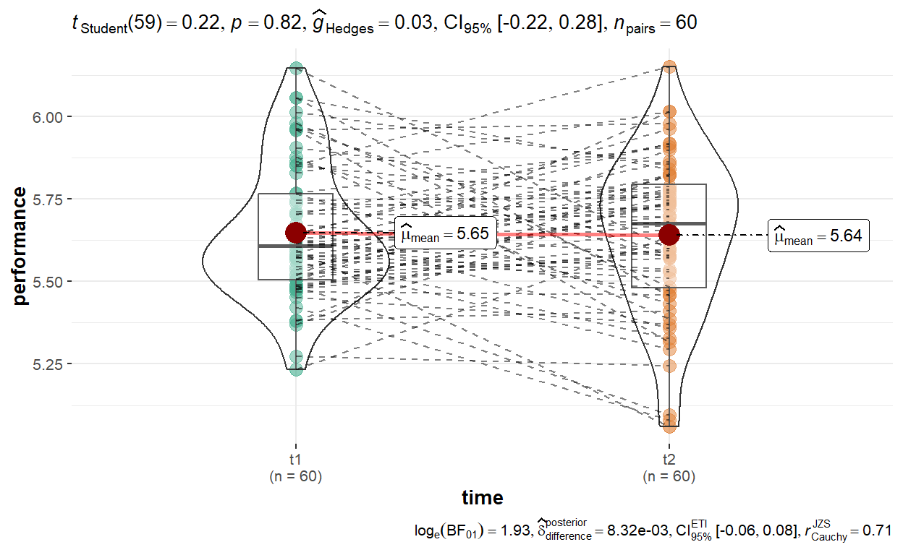
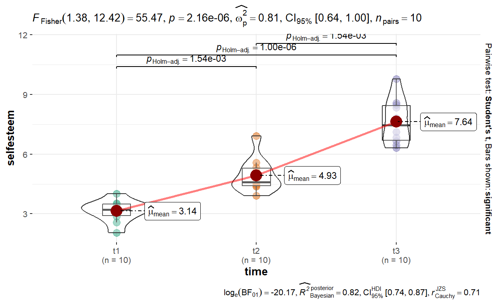
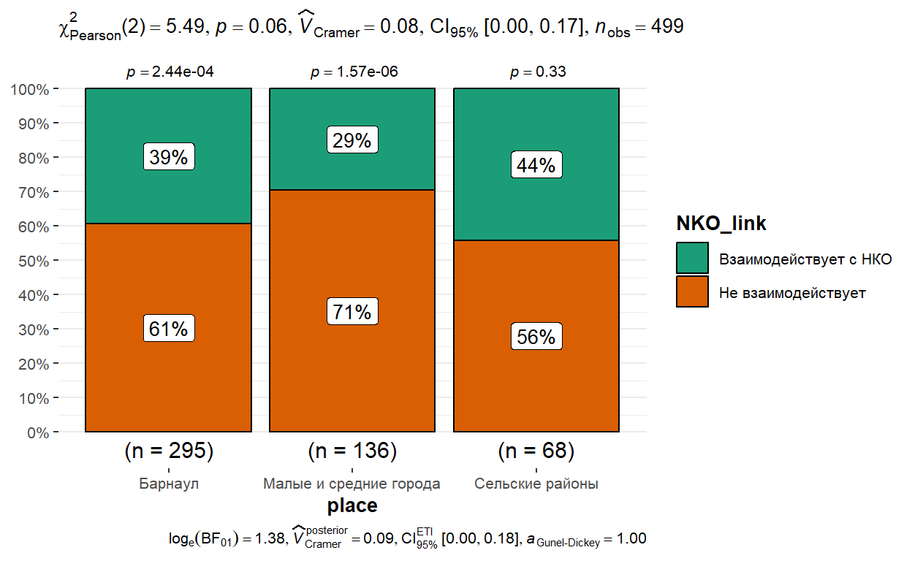

Представьтесь
Предварительные тестовые задания
Вопрос 1
Вопрос 2
Вопрос 3
Вопрос 4
Вопрос 5
Вопрос 6
Вопрос 7
Вопрос 8
Вопрос 9
Вопрос 10
Вопрос 11
Вопрос 12
Вопрос 13
Вопрос 14
Вопрос 15
Практические задания
Упражнение 1
С участниками эксперимента два раза провели тест производительности -
до и после участия в акселерационной программе. Результаты эксперимента
содержатся в наборе data.
Всего в таблице 5 переменных;
- id (идентификационный номер)
- gender (пол)
- stress (уровень стресса - высокий, средний, низкий)
- t1 (тест производительности, 1 измерение)
- t2 (тест производительности, 2 измерение)
Ваша первая задача будет заключаться в сравнении средних значений производительности до и после участия в программе. Поскольку данные количественные, для этой цели лучше всего подойдет t-критерий для зависимых выборок.
Напомним, что для того, чтобы посчитать этот критерий, необходимо сделать следующее:
- Посчитать различия в значениях между двумя измерениями – \(D\)
- Посчитать среднее значение получившихся различий \(d_1, d_2, … , d_n\):
\[\bar{d}=\frac{d_1+d_2+...+ d_n}{n}\]
- Посчитать значение t-критерия по формуле:
\[t = \frac{\bar{d}}{s/\sqrt{n}},\] где \(s\) - стандартное отклонение различий (\(d\)), \(n\) - объем выборки (количество пар значений, по которым высчитываются \(d\))/
Далее мы можем вычислить p-значение для абсолютного значения статистики критерия (\(|t|\)) на основе сведений о количестве степеней свободы (\(df\)): \(df=n−1\).
Итак, изучите данные (для себя самостоятельно), и напишите код, показывающий различия в средней производительности до и после.
t.test(data$..., data$..., paired=...)t.test(data$t1, data$t2, paired=TRUE)Упражнение 2
Переведите данные в “длинный формат” и создайте визуализацию с
помощью функции ggwithinstats(). У Вас должно получиться
следующее:

data_long<-data |>
pivot_longer(cols=...:t2,
names_to="...",
values_to = "performance")
ggwithinstats(
data = ...,
x = time,
y = ...
)data_long<-data |>
pivot_longer(cols=t1:t2,
names_to="time",
values_to = "performance")
ggwithinstats(
data = data_long,
x = time,
y = performance
)Упражнение 3
У нас есть данные по поводу самооценки некоторой группы лиц, измеренной три раза по время похудения, и мы хотим проверить, действительно ли следование диете приводит к изменению представлений о себе и повышает самооценку.
Поскольку групп больше двух, для сравнения средних значений нам требуется ANOVA с повторными измерениями.
Дисперсионный анализ с повторными измерениями расширяет идею t-критерия для зависимых выборок на случай, когда количество сравниваемых групп превышает две.
Вычисления сходны с теми, что мы рассматривали на примере «обычной» однофакторной ANOVA.
Различия будут заключаться в том, как мы будем подсчитывать среднюю межгрупповую сумму квадратов отклонений, для повторных измерений у в качестве группирующей переменной будет использоваться фактор времени:
\[F=\frac{MS_{time}}{MS_{error}}\]
или фактор условия: \[F=\frac{MS_{condition}}{MS_{error}}\]
Например, мы хотим сравнить значения, соответствующие различным временным отрезкам.
Тогда разница группового (внутри отдельных временных диапазонов) и общего среднего составит:
\[S_{time}=SS_b=\sum_{i=1}^{k}(\bar{x_i}-\bar{x})^2\] Разница индивидуальных значений и групповых средних:
\[SSw=\sum_{1}(x_{i1}-\bar{x_1})^2+\sum_{2}(x_{i2}-\bar{x_2})^2+ ... + \sum_{k}(x_{ik}-\bar{x_k})^2\] Разница средних по всем измерениям и общего среднего, k – количество уровней:
\[SS_{subjects}=k*\sum(\bar{x_i}-\bar{x})^2\]
Сумма квадратов ошибки:
\[SS_{error}=SS_w-SS_{subjects}\]
Тогда средний квадрат отклонений по времени будет:
\[MS_{time}=\frac{SS_{time}}{k-1}\] Соответственно, будет определяться и средняя ошибка:
\[MS_{error}=\frac{SS_{error}}{(n-1)(k-1)}\]
Посчитайте различия в самооценке. Учитывайте, что данные в “широком” формате, а нам нужен “длинный”.
data("selfesteem")
data_long<-selfesteem |>
pivot_longer(cols=t1:t3,
names_to="time",
values_to = "selfesteem")
res<-aov(selfesteem~time+Error(id/time), data=data_long)
summary(res)data("selfesteem")
data_long<-selfesteem |>
pivot_longer(cols=t1:t3,
names_to="...",
values_to = "...")
res<-aov(...~time+Error(id/time), data=...)
summary(...)data("selfesteem")
data_long<-selfesteem |>
pivot_longer(cols=t1:t3,
names_to="time",
values_to = "selfesteem")
res<-aov(selfesteem~time+Error(id/time), data=data_long)
summary(res)Упражнение 4
Поскольку у нас три группы, и F-критерий показывает только общую оценку различий, и чтобы понять, какие именно группы (в данном случае - временные периоды, когда проводилась оценка) отличаются, нам нужно было бы сделать парные сравнения с поправкой (Бонферрони, Холма и др.).
Вместо этого, сделайте визуализацию с помощью функции
ggwithinstats(), внутри уже содержатся все необходимые
статистические рассчеты.
Нам снова нужны “длинные данные”. Чтобы их получить, скопируйте код из предыдущего упражнения.
Должно получиться вот так:

data("selfesteem")
data_long<-selfesteem |>
pivot_longer(cols=t1:t3,
names_to="time",
values_to = "selfesteem")
ggwithinstats(
data = data_long,
x = time,
y = selfesteem
)data("selfesteem")
data_long<-selfesteem |>
pivot_longer(cols=t1:t3,
names_to="time",
values_to = "selfesteem")
ggwithinstats(
data = data_long,
x = time,
y = selfesteem
)Упражнение 5
Проведите анализ производительности по набору data из
упражнения 1, но с помощью непараметрического аналога - теста Вилкоксона
для повторных измерений. Используйте двухстороннюю альтернативу.
wilcox.test(data$..., ...$t2, paired = ..., alternative = "two.sided")wilcox.test(data$t1, data$t2, paired = TRUE, alternative = "two.sided")Упражнение 6
Проведите анализ самооценки (data_long) с помощью теста
Фридмана. Сравните результаты с дисперсионным анализом для повторных
измерений (упражнение 3). Какие выводы можно сделать?
res<-data_long |>
friedman_test(selfesteem ~ time |id)
resres<-data_long |>
friedman_test(selfesteem ~ time |id)
resУпражнение 7
На основе результатов исследования гражданского общества
(civil_society), проанализируйте взаимосвязь между местом
проживания (place) и опытом взаимодействия с НКО
(NKO_link). Можно предположить, что в городах количество
НКО больше и у жителей есть больше шансов взаимодействовать с ними? Так
ли это? Докажите.
- Сделайте таблицу сопряженности на базовом R
prop.table(table(civil_society$place, civil_society$NKO_link), margin=1)*100 - Посчитайте статистику хи-квадрат для этих переменных:
chisq.test(civil_society$place, civil_society$NKO_link)
prop.table(table(civil_society$place, civil_society$NKO_link), margin = 1)*100
chisq.test(civil_society$place, civil_society$NKO_link)prop.table(table(civil_society$place, civil_society$NKO_link), margin = 1)*100
chisq.test(civil_society$place, civil_society$NKO_link)Упражнение 8
Используя возможности библиотеки ggstatsplot и функции
ggbarstats создайте график, показывающий различия во
взаимодействии с НКО у жителей различных поселений.
У Вас должно получиться следующее:

ggbarstats(civil_society, x = NKO_link, y = place)ggbarstats(civil_society, x = NKO_link, y = place)Сохранить ответы
- Нажмите на кнопку, чтобы загрузить файл, содержащий Ваши ответы, в формате HTML.
- Сохраните файл на компьютере, а потом загрузите его в качестве ответа на странице курса.
(Если файл не загружается, попробуйте сохранить его, нажав правую кнопку мыши и выбрав "Сохранить ссылку как...")